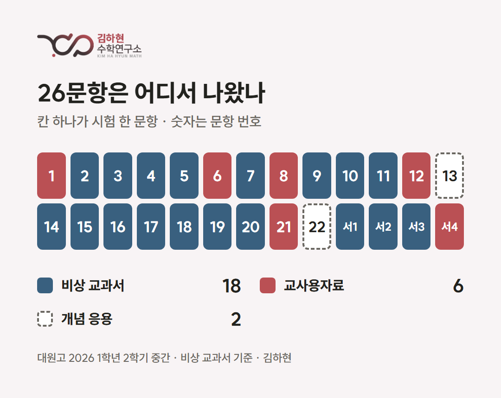
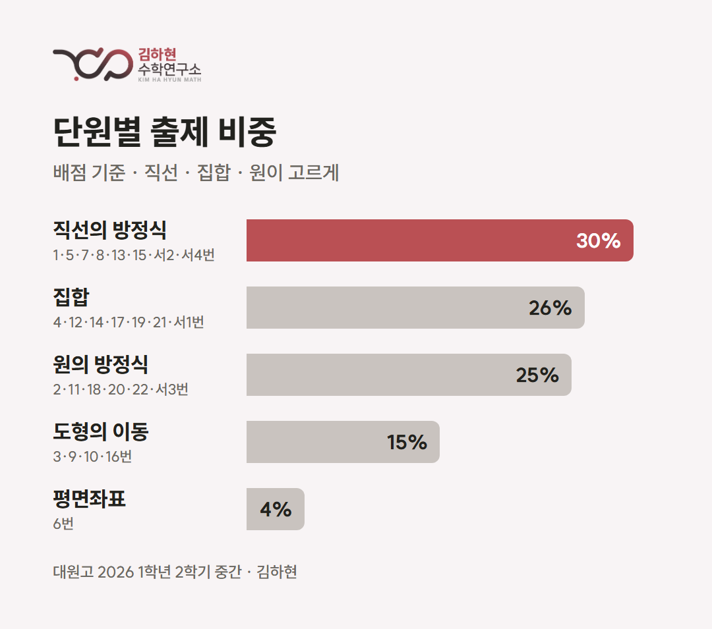
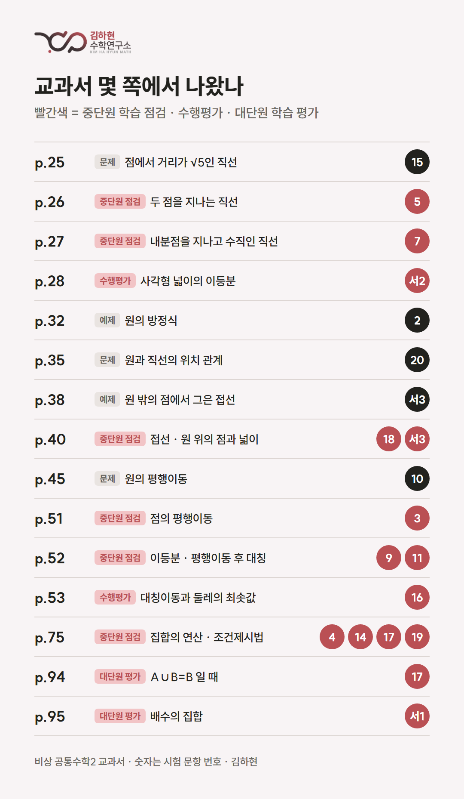

시험 분석 · 2026학년도 2학기 중간고사
대원고 1학년 수학 시험 분석
공통수학2 — 26문항 중 18문항이 교과서에서
김하현 · 광진구 고등수학 · 2026년 11월
대원고 1학년 2학기 중간고사 수학(공통수학2) 26문항을 교과서와 교사용 자료에 한 문항씩 대어 봤습니다. 이 글에는 각 문항이 어디에서 왔고, 원본에서 무엇이 달라졌는지를 정리했습니다.
- 시험 범위: 평면좌표부터 집합까지 — 교과서 Ⅰ단원 «도형의 방정식» 전부와 Ⅱ단원 «집합» (10~76쪽)
- 문항 수: 객관식 22 · 서술형 4
- 맞대어 본 자료: 비상 공통수학2 교과서 · 교사용 자료
문항 수 — 26문항, 시간이 빠듯한 시험
객관식 22문항에 서술형 4문항, 모두 26문항입니다. 같은 범위를 본 광남고(20문항)보다 6문항이 많습니다. 객관식 한 문항이 3.4~4.4점으로 잘게 나뉘어 있고, 서술형 4문항이 15점(5점짜리 두 문항 포함)을 차지합니다.
문항 하나하나는 교과서에서 본 꼴이 많지만, 26문항을 다 풀고 서술형 풀이까지 써야 해서 시간 배분이 점수를 가르는 시험입니다. 앞쪽 객관식에서 시간을 쓰면 배점이 큰 서술형을 서둘러 쓰게 됩니다.
등급컷 — 1등급 약 86점
- 1등급 약 86점 · 2등급 약 71점 · 3등급 약 44점 · 4등급 약 21점 (5등급제)
100점 만점에 14점 남짓, 객관식 서너 문항만 놓쳐도 1등급이 갈립니다. 2등급과 3등급 사이는 27점 가까이 벌어져 점수가 넓게 퍼진 시험이었습니다. 교과서에서 본 꼴의 문항을 시간 안에 실수 없이 맞히는 것이 곧 등급이었습니다.
출처 — 26문항 중 24문항이 교과서와 교사용 자료에서

- 비상 교과서(18문항): 2 · 3 · 4 · 5 · 7 · 9 · 10 · 11 · 14 · 15 · 16 · 17 · 18 · 19 · 20번, 서술형 1 · 2 · 3
- 교사용 자료(6문항): 1 · 6 · 8 · 12 · 21번, 서술형 4
- 개념 응용(2문항): 13 · 22번 — 여러 개념을 엮은 문항
교과서가 시험의 중심입니다. 교과서 문항은 숫자를 갈아 끼우거나, 같은 문장에서 마지막 질문만 바꾸거나, 조건을 더해 한 단계 어렵게 만들어 나왔습니다.
단원 — 직선 · 집합 · 원이 고르게

배점으로 보면 직선의 방정식이 30%로 가장 크고, 집합 26%, 원의 방정식 25%가 뒤를 잇습니다. 도형의 이동은 15%, 평면좌표는 한 문항(4%)이었습니다. 어느 한 단원에 쏠리지 않은 시험이라, 빈 단원 없이 고르게 준비해야 했습니다.
교과서 — 본문보다 «중단원 학습 점검»

교과서에서 온 문항은 본문 예제보다 단원 끝 코너에 몰려 있었습니다.
- «중단원 학습 점검»에서만 11문항. 집합 75쪽 한 쪽이 4 · 14 · 17 · 19번 네 문항으로 이어졌습니다.
- 53쪽 수행평가에 나온 점의 좌표가 16번에 그대로 들어갔습니다.
- 서술형 1은 95쪽 대단원 학습 평가의 서술형을, 서술형 2는 28쪽 수행평가를 바탕으로 했습니다.
원본을 바꾸는 방식
- 숫자 교체 — 문장은 두고 좌표와 계수만 바꿈. 6번은 좌표의 부호만 뒤집었습니다.
- 마지막 질문 바꾸기 — 최솟값을 최댓값으로(18번), «모두 선호하는»을 «모두 선호하지 않는»으로(19번), 집합을 구하던 것을 원소의 곱으로(14번).
- 묶기와 확장 — 서술형 1은 세 문항을 한 식으로 묶었고, 서술형 2는 수행평가 문항에 조건을 더해 넓이를 이등분하는 직선을 묻습니다.
기말고사는 이렇게 준비하세요
기말 범위는 명제, 함수, 유리함수와 무리함수입니다. 중간고사의 출제 방식이 그대로 이어질 가능성이 높습니다.
- 시간 안에 26문항을 끝내는 연습. 문제집을 풀 때도 시간을 재고, 객관식은 앞에서 빠르게 끝내고 서술형 풀이를 쓸 시간을 남겨 두는 순서를 몸에 익혀야 합니다. 막히는 문항은 표시하고 넘어갔다가 돌아오는 연습도 함께 하세요.
- 교과서를 끝까지 숙달. 본문 예제뿐 아니라 «중단원 학습 점검»(기초 · 기본 · 도전), 수행평가, 대단원 학습 평가까지 전부 시험 범위로 보세요. 이번 시험에서 «중단원 학습 점검» 하나가 11문항, 수행평가 · 대단원 평가에서 16번과 서술형 1 · 2가 나왔습니다. 교과서 문항의 숫자를 바꾼 문제도 함께 풀어 보세요. 이번 시험의 교과서 문항 상당수가 숫자만 바꿔 나왔고, 숫자가 바뀌면 외워 둔 답은 쓸 수 없습니다. 교사용 자료 문항도 함께 챙기면 좋습니다.
- 교과서 문항을 어렵게 바꾼 문제까지. 교과서를 여러 번 푸는 것만으로는 부족합니다. 같은 문항에서 묻는 값이 바뀌고(최솟값 → 최댓값), 조건이 더해지고(수행평가 → 넓이를 이등분하는 직선), 여러 문항이 한 문항으로 묶여 나옵니다. 교과서 문항을 바탕으로 한 단계 어렵게 변형한 문제를 풀어 봐야 시험장에서 처음 보는 꼴이 나와도 당황하지 않습니다.
대원고 기말, 지금 공부가 맞는지 궁금하다면
수업 학생에게는 26문항 전부를 원본과 대조한 분석 자료와 기말 대비 방법을 드립니다. 교과서와 교사용 자료를 어디까지 해야 할지, 고난도 문항은 어떻게 준비할지 상담해 드립니다.
수업 문의: 구주이배 수학학원 광진본원 02-456-9624